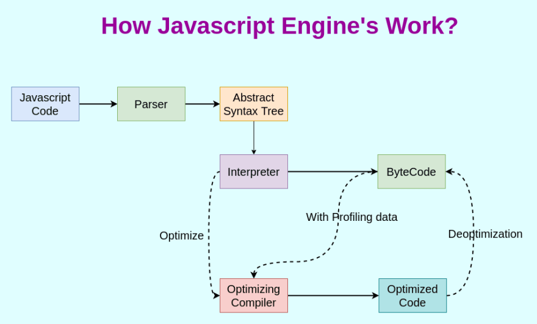
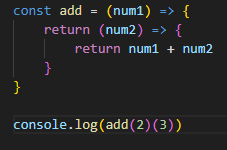
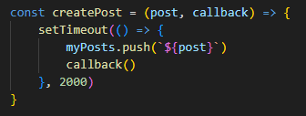
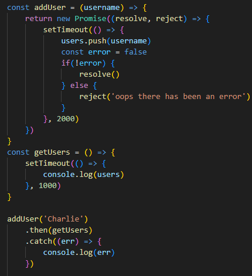
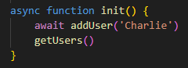
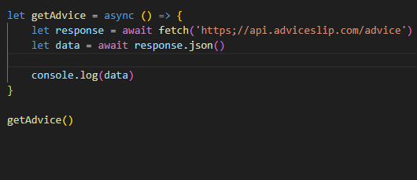
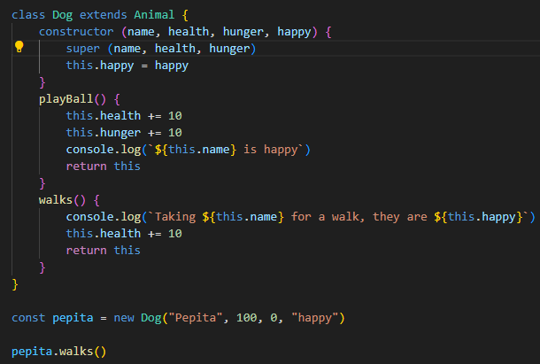
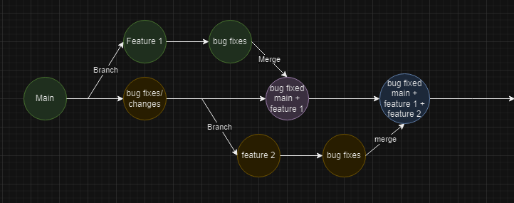

Our lessons were as follows:
A javascript engine is an engine used to interpret javascript into machine code, this is done by putting javascript(source code) into a compiler which compiles it into machine code, some engines have a secondary compiler called an optimization compiler that re compiles the code multiple times to make it run faster and more efficiently
Javascript engines are often made up of 2 main components
There is a lot more to learn about javascript engines and the order of execution but it's much more than I think I can put in one day's notes so you can find out more by clicking here
We also learned about scope, scope is which variables can be accessed and from where, a good way to look at it is that you can look outward but not inward
Execution context: the scope that a piece of code is run in
Higher Order Functions: Fucntions that either take a function as a parameter or return a function
An example of a practical use of a HOF would be:
You can look at another application of HOF here
On Tuesday we spent the morning doing an SQL task that involved normalizing, building and then querying a database
In the afternoon we covered a lot of content starting with synchronus and asynchronous code, synchronous code is code that runs line by line whilst asynchronous code runs alongside other lines of code, this can be seen in the SetTimeOut function as it is an asynchronus function so it will run everything in the call stack before it runs the contents of SetTimeOut as it is added to the bottom of the call stack, no matter where it is in the code
A callback function is a function that waits for another function to finish before it activates, this can be seen here
Promises are a type of built in function that allow you to do something once the function is ran or fails to run, you can check which state a promise is in by console.log-ing it, the 3 states are: Pending, Resolved and Rejected. You can catch the output from a promise rejection(error) using .catch which listenes to a specified block of code to see if it throws an error, this can be seen below
Another way of having a function wait would be to define a function as asynchronous and use the await keyword, to define an asynchronous function you use the async keyword like shown here
We also covered some week 8 material that I didn't fully understand so look forward to an actual explanation of parse and fetch from week 8
On friday we learned about classes, classes are templates for objects and can be declared using the class keyword, classes contain a constructor to initialize its properties, constructors take parameters which are passed into the object upon object creation.
Classes can sloe contain methods which can be called upon with the syntax "objectName.MethodName()"
Classes can also inherit properties and methods from their parents when told to do so, this done using the extends keyword. There is also the keyword super which takes the initializer from the parent class for a property
Github Branching is used to take a copy of the current state of a project and work on the copy so that multiple people can take copies and work simultaneously and merge their copies back into the actual project
Github Branching is a large topic but it breaks down to source control best practices, these practices are:
Inviting Collaborators
To invite collaborators, first open the repository in browser and select settings on the bar at the top
One of the first options should be collaborators under the access headline
Next select "Add people" it should be a green button
Now you just need to enter their email, username or full name and click "Add name to this repository"
Creating a branch
To create a branch first open github desktop on the repository you want to branch and select the "current branch" button
Select the branch that you want to branch from, this is typically the main or master branch
From there click "New Branch" and give it an appropriate name and click "Create Branch"
You now have a branch to work on that won't affect the main or master branch until merging which I will go into later on
Merging
To merge a branch to another branch or the master/main branch you first need to open the branch that you want to merge into
Hover over "Branch" and select "Merge into current branch"
Select the branch you want to merge into the current branch and click "Create a merge commit"
If a Merge conflict shows up, follow the guide here
On thursday we finished the SQL tasks we were set on tuesday morning, these tasks involved: creating, manipulating and querrying a normalized database